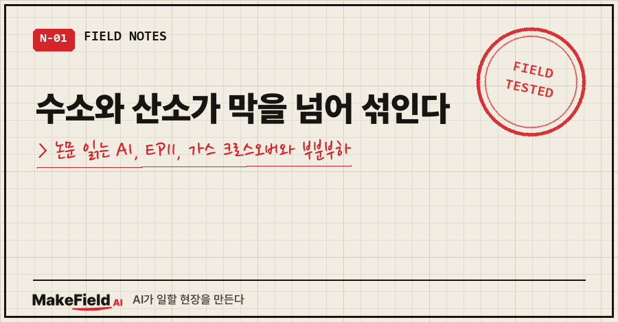
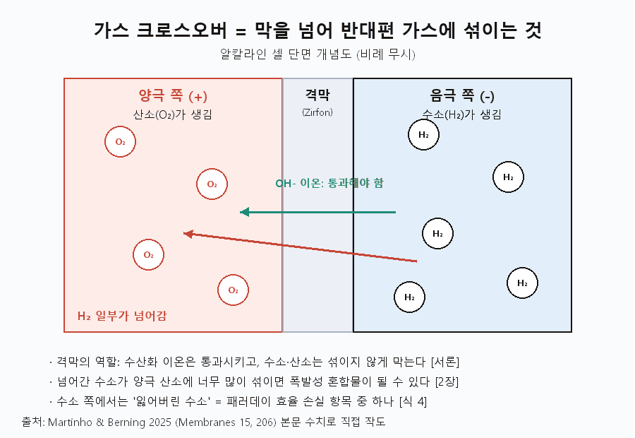
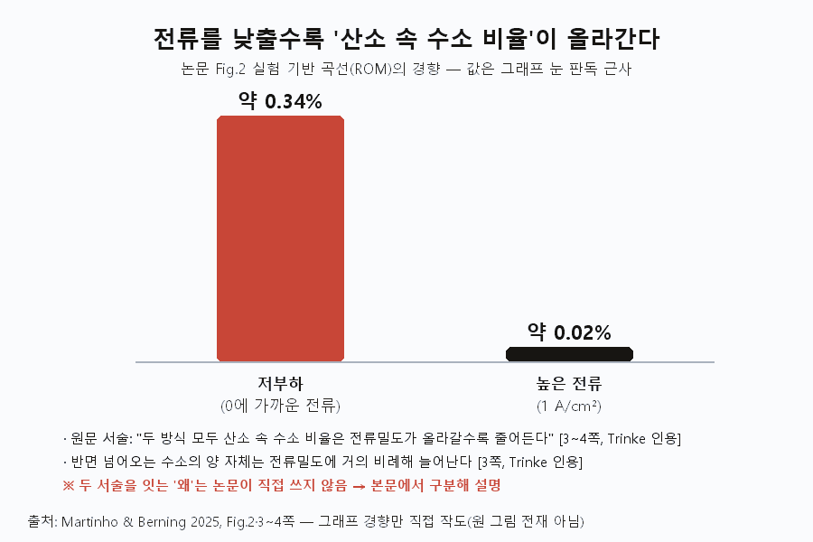
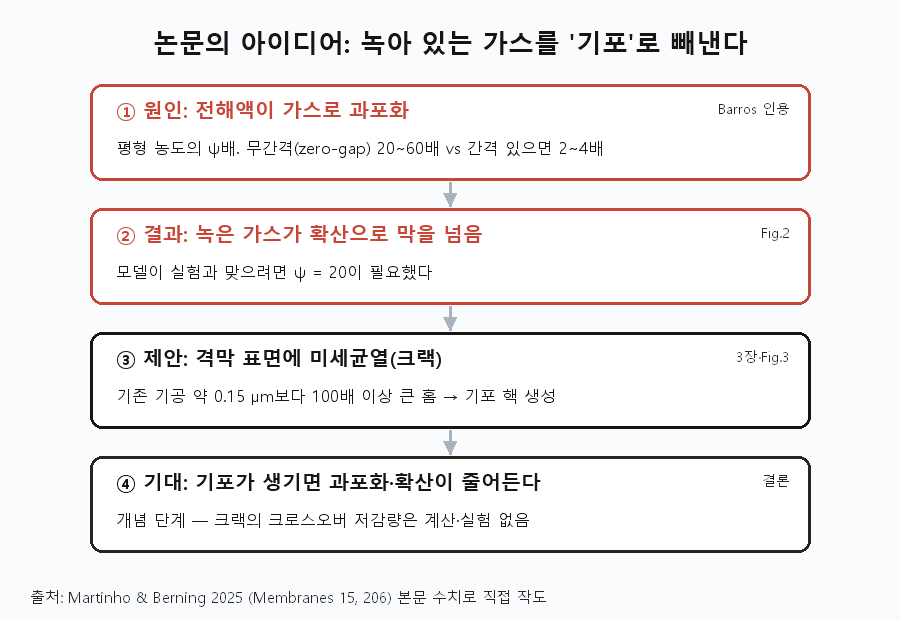
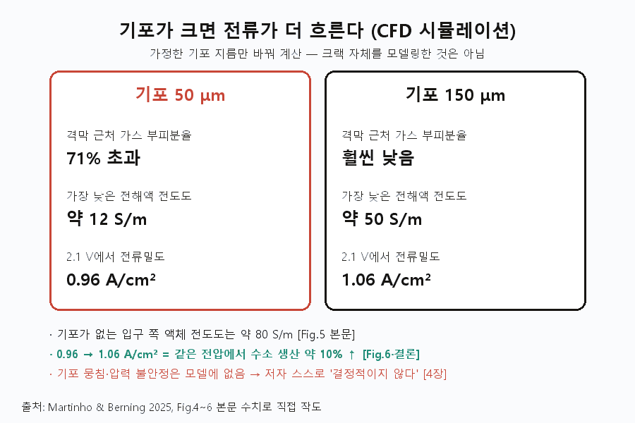
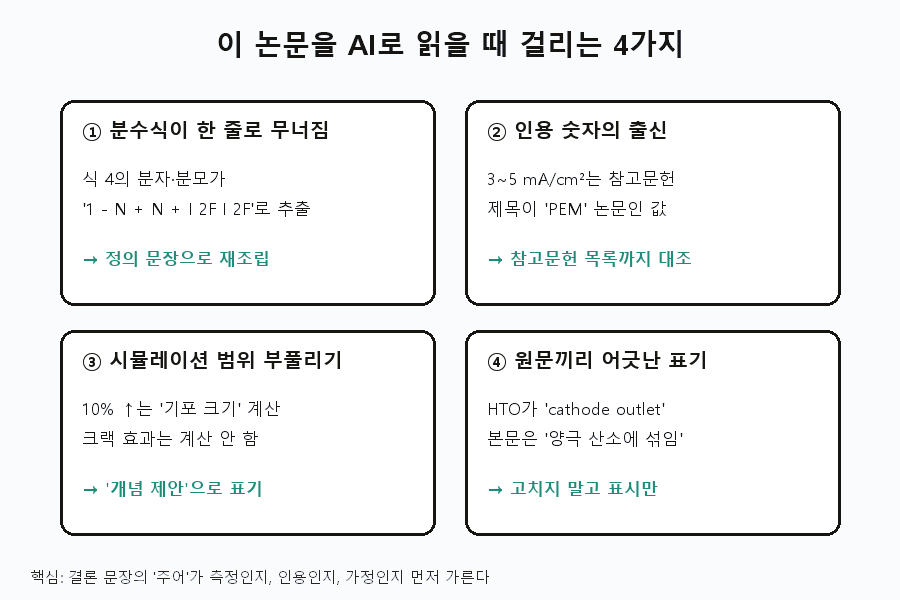

가스 크로스오버는 음극에서 만든 수소가 격막을 넘어 양극의 산소 쪽으로 섞여 들어가는 현상이에요. 위험한 이유는 효율보다 폭발성 혼합물이 생길 수 있다는 데 있습니다 [Martinho 2025, 2장].
그리고 이 비율은 전류를 낮출수록 커져요. 산소 속 수소 비율이 전류밀도가 올라가면 줄어든다는 실험 결과가 PEM·알칼라인 양쪽에서 나왔거든요 [Martinho 2025, 3~4쪽 — Trinke 인용].
'논문 읽는 AI' 11편, 2부의 첫 글입니다. EP05~10은 전류가 새는 이야기였죠. 이번부터는 가스가 섞이는 이야기예요.
읽은 논문은 덴마크 연구진(올보르대 등)이 2025년 7월 Membranes에 낸 8쪽짜리 단신(Communication)입니다(Martinho·Berning, doi: 10.3390/membranes15070206, 오픈액세스).
1. 가스 크로스오버란 무엇이고, 왜 위험한가요
크로스오버란 만들어진 수소·산소가 격막을 넘어 반대편으로 섞여 드는 것입니다. 이 논문은 이것을 알칼라인 수전해의 운전 범위(전류밀도·압력)를 심하게 묶는 핵심 요인으로 꼽아요 [Martinho 2025, Abstract].
용어 셋만 먼저 잡을게요.
- 격막(diaphragm): 양극과 음극 사이의 칸막이. 수산화 이온(OH-)은 통과시키고, 수소와 산소는 섞이지 않게 막아야 해요. 흔히 Zirfon이라는 다공성 막을 씁니다 [Martinho 2025, 서론].
- 과포화(ψ): 액체에 가스가 평형 농도보다 몇 배나 더 녹아 있는 상태. 가스는 먼저 액체에 녹고, 일정 수준 이상 과포화돼야 비로소 기포가 생겨요 [Martinho 2025, 식5 설명].
- HTO: 산소 대비 수소 비율(hydrogen to oxygen ratio). 섞임 정도를 나타내는 지표입니다.

손해는 두 갈래예요.
| 구분 | 내용 | 근거 |
|---|---|---|
| 효율 손실 | 넘어간 수소는 잃어버린 수소. 패러데이 효율 식의 손실 항목 중 하나 | [Martinho 2025, 식4] |
| 손실 크기 | 패러데이 효율은 표준 조건에서 보통 90% 이상 | [Martinho 2025, 2장] |
| 더 큰 문제 | 양극 산소에 수소가 너무 많이 섞이면 폭발성 혼합물 가능 | [Martinho 2025, 2장] |
격막에는 맞바꿈이 있어요. 구멍이 많으면(다공도↑) 저항이 낮아지지만 크로스오버도 늘어납니다 [Martinho 2025, 서론]. Zirfon은 두께가 500 μm로 비교적 두껍고, 저항은 상온에서 0.25 Ωcm² 초과, 80℃에서 0.15 Ωcm² 미만이었어요 [Martinho 2025, 서론 — Vermeiren 인용].
2. 부분부하에서 크로스오버가 왜 더 심해지나요
전류를 낮추면 넘어오는 수소의 '양'은 줄지만, 산소 대비 '비율'은 오히려 올라갑니다. 이 구분이 이번 편의 핵심이에요.
논문에 인용된 실험 결과는 이래요 [Martinho 2025, 3~4쪽 — Trinke 인용].
- 수소 크로스오버 양은 전류밀도에 거의 비례해 늘고, 1 A/cm²에서 3~5 mA/cm² 수준이다(온도에 따라 다름).
- 온도가 높을수록 크로스오버가 확실히 늘어난다.
- PEM과 알칼라인 모두 산소 속 수소 비율은 전류밀도가 올라갈수록 줄어든다. PEM 쪽 크로스오버가 더 컸다.
논문 Fig.2의 실험 기반 곡선도 같은 모양이에요. 그래프를 눈으로 읽으면 전류가 0에 가까울 때 HTO가 약 0.3%대로 가장 높고, 1 A/cm²에서는 0.02% 안팎까지 내려갑니다 [Martinho 2025, Fig.2 — 판독 근사].

그럼 왜 비율이 커질까요. 여기서 정직하게 짚을 점이 있어요. 논문은 '왜'를 한 문장으로 직접 쓰지 않습니다. 원문에 있는 두 사실을 산수로 이으면 이렇게 됩니다.
- 만들어지는 가스 양은 전류에 비례해요(식4의 I/2F) [Martinho 2025, 식4].
- 비율 = 넘어온 수소 ÷ 만들어진 산소. 전류를 낮추면 분모는 전류만큼 줄어드는데, 비율이 커졌다는 건 분자가 그만큼 줄지 않았다는 뜻이에요.
즉 저부하에서는 같은 섞임이 더 진하게 나타납니다. 이 연결은 원문 문장이 아니라 원문 두 서술과 정의를 이은 해석이라는 점을 밝혀 둘게요.
3. 이 논문은 무엇을 풀려 했고, 어떻게 했나요
크로스오버가 실험값보다 훨씬 많은 원인을 '과포화'로 보고, 격막에 미세균열을 내 기포를 만들어 과포화를 낮추자는 개념을 제안했어요 [Martinho 2025, Abstract].
출발점은 측정이 평형 가정으로 예상한 값보다 크로스오버가 훨씬 크다는 사실이었습니다. 액체가 과포화돼 있다고 봐야만 설명된다는 거죠 [Martinho 2025, 3~4쪽 — Trinke 인용]. 다른 연구는 과포화 정도를 직접 수치로 냈어요 [Martinho 2025, 4쪽 — Barros 인용].
| 구성 | 과포화 ψ | 조건 |
|---|---|---|
| 무간격(zero-gap) | 20~60, 경계면 최대 80 | 상온, KOH 12% |
| 전극-격막 간격 있음 | 약 2~4 | 상온, KOH 12% |
연구진의 방법은 전산유체해석(CFD)이에요. 상용 해석 프로그램으로 액체·가스 두 상의 수송 방정식을 모두 풀고, 입력값은 약 20개입니다 [Martinho 2025, 2장]. 검증엔 성능 곡선 대신 크로스오버 값을 썼어요. 같은 셀에서도 성능 곡선이 크게 달라질 수 있어서라고 합니다 [Martinho 2025, 2장].
80℃, KOH 30 wt% 조건에서 모델이 실험과 잘 맞으려면 과포화를 ψ = 20까지 올려야 했어요 [Martinho 2025, Fig.2 본문].

해법 아이디어는 단순해요. 표면에 홈이 있으면 기포가 잘 생긴다는 건 알려진 현상이고, 홈 크기로 기포 크기도 조절할 수 있다는 겁니다. Zirfon의 기공은 약 0.15 μm라서, 제안하는 균열은 이보다 100배 이상 커요 [Martinho 2025, 3장].
4. 무엇을 알아냈나요 — 기포 크기의 효과
기포가 클수록 전해액 저항이 낮아져, 같은 2.1 V에서 전류밀도가 0.96에서 1.06 A/cm²로 약 10% 올라갔어요 [Martinho 2025, Fig.6·결론].
| 항목 | 기포 50 μm | 기포 150 μm | 근거 |
|---|---|---|---|
| 격막 근처 가스 부피분율 | 71% 초과 | 훨씬 낮음 | [Martinho 2025, Fig.4 본문] |
| 가장 낮은 전해액 전도도 | 약 12 S/m | 약 50 S/m | [Martinho 2025, Fig.5 본문] |
| 2.1 V에서 전류밀도 | 0.96 A/cm² | 1.06 A/cm² | [Martinho 2025, Fig.6 본문] |
기포가 없는 입구 쪽 액체의 전도도는 약 80 S/m예요 [Martinho 2025, Fig.5 본문]. 작은 기포는 격막 근처를 가스로 채워 전류 길을 막는다는 뜻입니다.

5. 한계는 무엇인가요
크로스오버를 줄였다는 결과가 아니라, 줄일 수 있을 것이라는 개념 제안입니다.
- 기포 크기만 계산: 시뮬레이션은 기포 지름을 50·150 μm로 '가정'해 바꾼 것이에요. 균열 자체나 크로스오버 감소량은 계산하지 않았습니다 [Martinho 2025, 4장].
- 빠진 물리: 기포 뭉침·압력 불안정이 모델에 없어 저자 스스로 "결정적이지 않다"고 했어요 [Martinho 2025, 4장].
- 인용 조건 차이: 과포화 수치는 상온·KOH 12% 실험값이라, 흔히 쓰는 30%와 다릅니다 [Martinho 2025, 4쪽].
- 실험 없음: 균열 격막을 만들어 측정한 결과는 없어요. 다른 연구에서 균열로 보이는 구조가 관찰됐다는 인용이 출발점입니다 [Martinho 2025, 서론·3장].
6. AI에게 읽힐 때 '주어'부터 가른 이유
이 논문의 함정은 문장마다 주어가 다르다는 거예요. 저자 실험, 남의 실험 인용, 가정으로 돌린 계산이 한 문단에 섞여 있습니다.

분수식이 한 줄로 무너진다. PDF에서 패러데이 효율 식을 뽑으니 이렇게 나왔어요.
ηH2 = 1 −
Ncross
H2
+ Nrecomb
H2
+ Ishort
2F
I
2F분자·분모가 사라져 덧셈 나열처럼 보입니다. 식 바로 아래 정의 문장("I/2F는 전류 I로 만든 가스 몰수")으로 η = 1 − (N_cross + N_recomb + I_short/2F) ÷ (I/2F)를 다시 세웠어요.
인용 숫자의 출신을 놓친다. "1 A/cm²에서 3~5 mA/cm²"는 알칼라인 논문 본문에 있지만, 각주 번호를 참고문헌 목록에서 따라가면 제목이 PEM 수전해 연구예요. 그래서 본문에 'Trinke 인용'을 붙였습니다.
시뮬레이션 범위를 부풀린다. "균열로 크로스오버를 줄이고 성능 10% 향상"으로 요약하기 쉬워요. 실제 10%는 기포 크기 가정의 결과이고, 균열 효과는 계산되지 않았습니다.
원문끼리 어긋난 표기. Fig.2 캡션은 HTO를 "cathode outlet(음극 출구)"에서 계산했다고 써요. 그런데 본문은 수소가 넘어가 섞이는 곳을 양극 산소라고 설명합니다. 어느 쪽이 맞는지 판정하지 않고 원문 표기 그대로 두었어요.
여러분은 AI 요약 속 숫자가 '누구의' 결과인지 확인해 보신 적 있나요? 위 함정을 잡은 질문을 그대로 옮겨 둡니다.
1) 수치마다 [저자 실험 / 저자 시뮬레이션 / 다른 논문 인용] 중 하나로 분류하고, 인용이면 참고문헌 제목까지 적어.
2) 줄바꿈으로 깨진 수식은 식 아래 정의 문장과 대조해 다시 세워.
3) 결론 문장이 실제로 계산·측정한 범위를 넘는지 점검해 (가정한 값인지, 직접 모델링한 것인지).
4) 논문이 '왜'를 직접 쓰지 않은 부분은 '원문 없음'으로 표시하고 네 해석과 분리해.
5) 캡션과 본문이 어긋나면 고치지 말고 둘 다 원문 그대로 보여 줘.7. 자주 묻는 질문
Q. 가스 크로스오버는 효율 문제인가요, 안전 문제인가요?
둘 다지만 논문은 안전을 더 큰 문제로 봐요. 패러데이 효율은 보통 90% 이상이지만, 수소가 산소에 너무 많이 섞이면 폭발성 혼합물이 될 수 있습니다 [Martinho 2025, 2장].
Q. 격막을 얇고 성기게 만들면 되지 않나요?
저항은 줄지만 크로스오버가 늘어요. 그래서 격막은 두께·다공도·투과도·기포점(bubble point)을 함께 맞춰야 한다는 게 결론입니다 [Martinho 2025, 결론].
Q. 전극과 격막 사이에 간격을 두면 나아지나요?
인용된 실험에서 과포화는 무간격일 때 20~60, 간격이 있을 때 약 2~4였어요 [Martinho 2025, 4쪽 — Barros 인용]. 다만 무간격은 저항을 줄이려고 쓰는 구조라 맞바꿈이 있습니다 [Martinho 2025, 2쪽].
정리하면, 크로스오버는 전류를 낮출 때 비율로 더 위험해지고, 그 뿌리에는 전해액의 과포화가 있습니다. 이 논문은 그 과포화를 기포로 빼내자는 첫 그림을 그렸어요.
다음 편은 3부, 안전입니다. 수소 설비는 얼마나 떨어뜨려 놓아야 하는지 다뤄요.
논문을 AI에게 맡길 때 쓰는 점검 질문 모음은 makefield.ai에 정리해 두고 있어요.